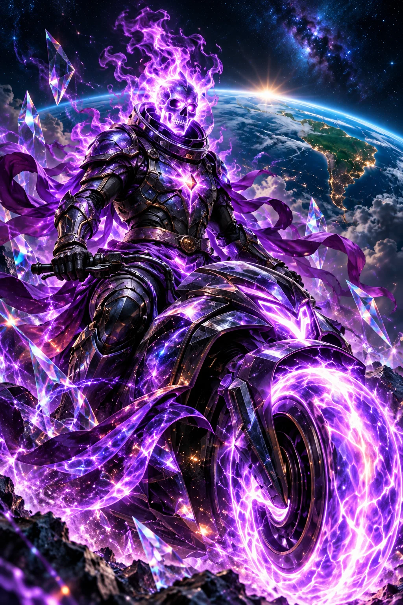

PODER 01
Aurora de caminhos
Projeta rotas violetas que cada viajante pode explorar, interromper ou trocar sem perder o acesso ao destino.

ARQUIVO DOS CAVALEIROS · 04 / 05
Pertencer também é poder escolher o próprio caminho.
Inclusão neurodivergente
Personagem e poderes ficcionais do universo PLANO D. Fé, neurodiversidade e cuidado socioambiental inspiram sua jornada.
ORIGEM E TRANSFORMAÇÃO
Prisma era cartógrafa das auroras numa cidade que obrigava todos a seguir a mesma luz, no mesmo horário. As rotas pareciam perfeitas, mas muita gente ficava pelo caminho. Ao escutar moradores neurodivergentes, percebeu que o mapa apagava necessidades, interesses e escolhas. Na oração, pediu a Deus disposição para rever o próprio trabalho. Sua armadura refletiu uma aura violeta quando desenhou várias entradas para a praça. Prisma aprendeu a perguntar, oferecer alternativas e aceitar recusas. Sua missão cresceu até alcançar praias e florestas: uma comunidade acessível também precisa de água limpa e espaços de convivência. Hoje, seus mapas começam pelas pessoas que vão usá-los.
Na ficção, a força de Prisma ganha forma nestas três habilidades. Cada poder expressa um compromisso de cuidado.
PODER 01
Projeta rotas violetas que cada viajante pode explorar, interromper ou trocar sem perder o acesso ao destino.
PODER 02
Cria um espaço fantástico de luz suave e som regulável, que só envolve quem escolhe entrar.
PODER 03
Converte os sinais das estrelas em imagens, palavras e ritmos, oferecendo formas diferentes de compreender a mesma informação.
NO UNIVERSO DA HISTÓRIA
Abrir espaço para diferentes formas de perceber, aprender e participar, buscar em Deus humildade para ouvir pessoas neurodivergentes e defender escolhas acessíveis nas ações comunitárias e ambientais, reconhecendo limites, autonomia e o direito de pertencer sem precisar demonstrar talentos extraordinários.
UM PASSO POSSÍVEL HOJE
Ao organizar uma conversa ou atividade, ofereça instruções claras, pausas e alternativas de participação. Pergunte preferências diretamente, acolha a recusa e deixe decisões sobre apoio com a própria pessoa envolvida.
Explore a atuação, os canais oficiais de apoio e a transparência no diretório do PLANO D. A história é uma inspiração; estas instituições reais atuam de forma independente do universo ficcional.
CINCO CAMINHOS · UM PROPÓSITO
Narrativa autoral preparada com assistência de IA por solicitação do idealizador. Os cavaleiros são alegorias dos valores do PLANO D. Direitos e créditos ↗